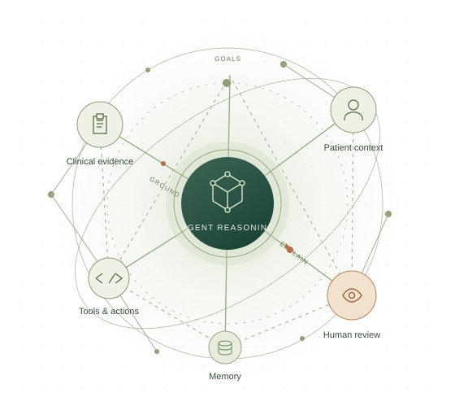

MORNING 01
A common foundation
Opening vision and tutorials on agent architectures, graph representations, and causal and human-centered explanation.
AAAI-27 BRIDGE PROGRAM
Bridging Reasoning and
Explainability in Healthcare
Connecting the communities building AI that acts
with the people who need to understand why.
Call opens Nov 1/ Submissions due Dec 1, 2026

From an agent’s actions to an inspectable account.
One-day bridge · exact day to be announced
Tutorials, hands-on labs & shared discovery
01 / THE IDEA
An agent’s story is more than its final answer.
Agentic systems plan, retrieve information, use tools, coordinate with other agents, and adapt. Understanding their decisions means connecting those actions to the evidence behind them.
This bridge explores knowledge graphs as a shared interface between agentic reasoning and explainability, with healthcare as a central application. We bring together researchers and practitioners in AI, knowledge representation, causal reasoning, human–computer interaction, and healthcare.
Our question: how can we make agent trajectories traceable, testable, and understandable to the people who rely on them?
Graphs alone do not guarantee faithful explanations. Their claims must be grounded in recorded events and tested against evidence.
02 / RESEARCH DIRECTIONS
We welcome contributions on the following six themes, with healthcare as a central application.
03 / CALL FOR PAPERS & PARTICIPATION
We invite two-page contributions that connect agentic AI, graph-based reasoning, and explainability, especially in healthcare and related consequential applications.
Selection will emphasize disciplinary breadth and contributions to shared bridge outcomes. Selected contributions will seed short talks, posters, and collaborative working sessions.
Formatting, reference-page limits, review policies, and publication details will be announced with the submission link.
04 / A DAY OF CONNECTIONS
The final date, room, speakers, and session times will be announced. The bridge will take place on one day within February 16–17, 2027.
Opening vision and tutorials on agent architectures, graph representations, and causal and human-centered explanation.
A hands-on lab, selected position talks, and a poster and mentoring session to connect ideas across disciplines.
Counterfactual evaluation, multi-agent attribution, interactive graph explanations, and application roundtables.
An Oxford-style debate, benchmark and schema design sprints, working-group reports, and a community research roadmap.
WHAT WE AIM TO BUILD
05 / THE PEOPLE BEHIND THE BRIDGE
Connecting expertise in computer science, agentic AI, explainability, and healthcare.
Southern Illinois University
Carbondale
School of Computing
Baylor University
Department of Computer Science
UT Southwestern
Medical Center
Department of Radiation Oncology
UT Southwestern
Medical Center
Department of Radiation Oncology
Our student organizing team
06 / BEFORE YOU JOIN
Researchers, practitioners, graduate students, and advanced undergraduates working in agentic AI, planning, knowledge graphs, explainable and causal AI, HCI, software assurance, and healthcare. Tutorials assume general AI literacy; you do not need expertise in every participating field.
A two-page position statement, challenge, demonstration, dataset, or early-stage contribution related to the bridge themes. Detailed formatting instructions, reference-page limits, review and publication policies, and the submission portal will be announced here.
Yes. The bridge is planned as a one-day, in-person event in Montréal during the AAAI-27 Bridge Program on February 16–17, 2027. The exact day and room will be announced. AAAI requires bridge presenters to attend in person.
Conference registration information will be available through the official AAAI-27 website. Bridge-specific participation instructions and links to tutorial slides, lab materials, and community resources will be posted here as they become available.
LET’S CONNECT THE DOTS
For questions about submissions, participation,
or the bridge program, contact Zhong Chen.